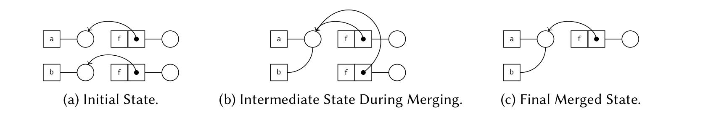
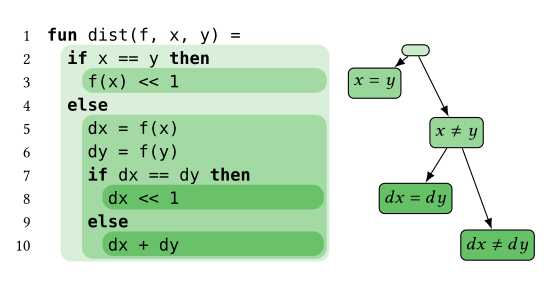

Background
E-Graphs
E-graphs compactly represent large spaces of equivalent terms, and they sit at the
core of automated theorem provers, SMT solvers, and optimizing compilers. The
classical data structure is built around one kind of fact: unconditional equality
between terms. For example, the e-graph below contains the atoms a and
b and the applications f(a) and f(b).
Rectangles are e-nodes, one per term; circles are e-classes, the
sets of e-nodes known to be equal; and each arrow connects an e-node to the e-class
of its argument. Initially every e-node sits in its own e-class (a). Asserting
a = b merges their e-classes (b), and by congruence the e-graph
discovers on its own that f(a) = f(b), merging those e-classes as
well (c).

Other aspects of the reasoning, such as terms being different, equalities holding under assumptions, or facts being discovered in separate contexts, are not part of the data structure itself. This semantic information is traditionally managed by the tools around the e-graph, for example by encoding it through equalities or by maintaining one e-graph per context.
Challenges
Consider a verifier analyzing the following function, which adds the distances
f(dx) and f(dy) of two differences, doubling by a bit
shift when the operands are known to be equal. Each conditional splits the
reasoning into branches: the first branch assumes dx = dy, the others
assume dx ≠ dy together with da = db or
da ≠ db. The nested scopes form a tree of contexts, each carrying
its own set of facts.

A classical e-graph has no place for any of this. The disequality
dx ≠ dy cannot be stated, so it must be tracked outside the data
structure. Each branch needs its own equivalence relation, so tools maintain one
full e-graph per branch, even though the branches agree on most of what they know.
And once the branches have been explored, there is no operation to combine what they
learned. As programs and proofs branch further, the duplicated and replayed work
compounds.
Representing difference, assumptions, and contexts directly in the data structure removes these costs: facts can be shared across proof branches rather than replicated, knowledge from independently explored contexts can be composed, and proof exploration can be organized in parallel. The extensions on the overview page develop this idea step by step, each with formal correctness guarantees and measurable performance gains.